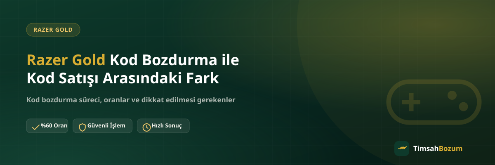

Elinde kullanmadığın bir Razer Gold kodu olduğunda aklına gelen ilk iki seçenek genelde aynı: bir bozum hattına yazıp kodu bozdurmak ya da kodu doğrudan ihtiyacı olan birine satmak. İkisi de kodu nakde çevirmenin bir yolu gibi görünse de süreç, risk ve sonuç açısından aralarında önemli farklar var. Bu yazıda iki yöntemin nasıl işlediğini, hangi noktalarda ayrıştığını ve hangi durumda hangisinin daha mantıklı olabileceğini anlatıyoruz.
Razer Gold Kodunu Bozdurmak ile Satmak Arasında Ne Fark Var?
Bozdurma, kodunu bir hizmet sağlayıcıya paylaşıp belirlenen bir oran üzerinden karşılığını almandır. Satış ise kodu doğrudan bir alıcıya, genellikle kendi aranızda anlaştığınız bir tutar üzerinden devretmen anlamına gelir. İkisinde de kod bir kez paylaşıldığında elinden çıkar, bu yüzden karşı tarafın kim olduğu ve sürecin nasıl ilerleyeceği her iki yöntemde de belirleyici.
Kod Satışı Nasıl Çalışır?
Kod satışında genelde bir alıcı bulman gerekir: bu bir tanıdık, bir oyun forumundaki ilan sahibi ya da sosyal medyada "Razer Gold alıyorum" diyen biri olabilir. Tutar üzerinde anlaştıktan sonra kodu paylaşırsın, karşılığında ödemeni beklersin. Burada süreç tamamen iki tarafın kendi aralarında kurduğu bir güvene dayanır; resmi bir oran, yazılı bir süreç ya da sabit bir hat yoktur.
Razer Gold Kodunu Bozdurma İşlemi Nasıl Çalışır?
Bozdurmada ise süreç önceden tanımlıdır. WhatsApp'tan yazarsın, kodunu paylaşırsın, güncel oranı teyit edersin ve onay sonrası ödemen WhatsApp üzerinden görüşülen bir yöntemle yapılır. Üyelik, form doldurma ya da kimlik belgesi istenmez. Razer Gold bozdurma hizmetinde oran ve süreç herkese aynı şekilde işler, pazarlık veya kişiden kişiye değişen bir tutar yoktur.
Kod Satışında Hangi Riskler Var?
Kod satışının en büyük riski, ödemenin kod paylaşıldıktan sonra yapılmamasıdır. Kod tabanlı bir ürün olduğu için paylaşıldığı anda kim elinde tutuyorsa onun tarafından değerlendirilebilir hale gelir; ödeme gelmediğinde geri alman mümkün değildir. Ayrıca alıcının gerçek kimliği, ödeme gücü ya da niyeti konusunda elinde bir doğrulama olmayabilir. Forumlarda ya da gruplarda açılan ilanlarla ilgili daha detaylı bir değerlendirmeyi forum ilanlarının güvenilirliği konulu yazımızda bulabilirsin.
Bozdurma Neden Daha Öngörülebilir Bir Süreç Sunar?
Resmi bir bozum hattında oran işlemden önce teyit edilir ve süreç her kodda aynı adımları takip eder: bilgi paylaşımı, oran teyidi, onay, ödeme. Bu öngörülebilirlik, tarafların ne zaman ne bekleyeceğini bilmesini sağlar. Bir satışta ise her alıcı farklı davranabilir, pazarlık süreci uzayabilir ya da son anda vazgeçilebilir; bu durumlar bozdurma sürecinde yaşanmaz çünkü oran ve adımlar baştan nettir.
Oranlar Arasında Nasıl Bir Fark Olur?
Kod satışında tutar, alıcı ile pazarlık sonucu belirlenir; bazen piyasa oranının üzerinde bir teklif gelse de bu teklifin gerçekleşip gerçekleşmeyeceği garanti değildir. Bozdurmada ise oran önceden yayınlanır ve işlem öncesi WhatsApp'tan teyit edilir. Güncel oranlar zaman zaman güncellenebildiği için işleme başlamadan önce güncel bilgiyi WhatsApp'tan teyit etmek en doğrusu.
Hangi Durumda Hangi Yöntem Tercih Edilmeli?
Güvendiğin, geçmişte işlem yaptığın bir tanıdığına kod satmak isteyebilirsin; bu durumda risk büyük ölçüde senin tanıdığına olan güvenine bağlıdır. Ancak tanımadığın bir ilan sahibine ya da bilmediğin bir hesaba kod paylaşmak söz konusuysa, resmi ve yayınlanmış bir oranı olan bir bozum hattı tercih etmek daha güvenli bir yol. Kodun tam değerinin tek seferde değerlendirildiğini ve kısmi bozum yapılmadığını da bu noktada hatırlamakta fayda var.
Hangi Yöntem Daha Hızlı Sonuçlanır?
Kod satışında alıcı bulmak, tutar üzerinde anlaşmak ve ödemenin gelmesini beklemek, günler sürebilen bir süreç olabilir; özellikle uygun bir alıcı çıkmazsa ilan günlerce açık kalabilir. Bozdurma işleminde bu arayış adımı yoktur, oran zaten belirlenmiş olduğu için süreç bilgi paylaşımı ve onaydan ibarettir. Acele eden ya da kodunu belirli bir süre içinde değerlendirmek isteyen biri için bu fark pratikte önemli bir avantaja dönüşür.
Resmi Hat Dışındaki Taleplere Nasıl Yaklaşmalısın?
TimsahBozum adına ya da benzer bir isimle farklı bir numaradan veya platformdan ulaşıldığını düşünüyorsan, kod bilgini paylaşmadan önce bunu resmi WhatsApp hattımızdan (+90 543 887 21 71) teyit et. Bozum sürecinde senden kod dışında bir bilgi, özellikle bir SMS doğrulama kodu istenmez; böyle bir talep gelirse işlemi durdurman gerekir.
İşlem Kaydı Tutmak Açısından Fark Var mı?
Kod satışında anlaşma genelde sözlü ya da dağınık mesajlar üzerinden kalır; tutar, tarih ya da hangi kodun hangi işlemde kullanıldığı kolayca unutulabilir. Bozdurma sürecinde ise tüm görüşme WhatsApp üzerinde yazılı olarak kalır: paylaştığın bilgi, teyit ettiğin oran ve onay anı tek bir yazışmada görülebilir. İleride bir soru çıkması durumunda bu yazışma kaydı, ne konuşulduğunu hatırlamak için elinde hazır bir referans olur. Bu küçük fark, özellikle birden fazla kod bozdurduğun dönemlerde işini kolaylaştırır.
Hazır olduğunda WhatsApp hattımıza yazarak kodunu güncel oran üzerinden bozdurma sürecini başlatabilirsin.
İlgili Yazılar
- Forumlardaki Razer Gold Bozum İlanları Güvenilir mi?
- Razer Gold Kodu Bozdurmadan Önce Bilmen Gereken 5 Şey
- Razer Gold Kodu Nasıl Bozdurulur? Adım Adım Rehber